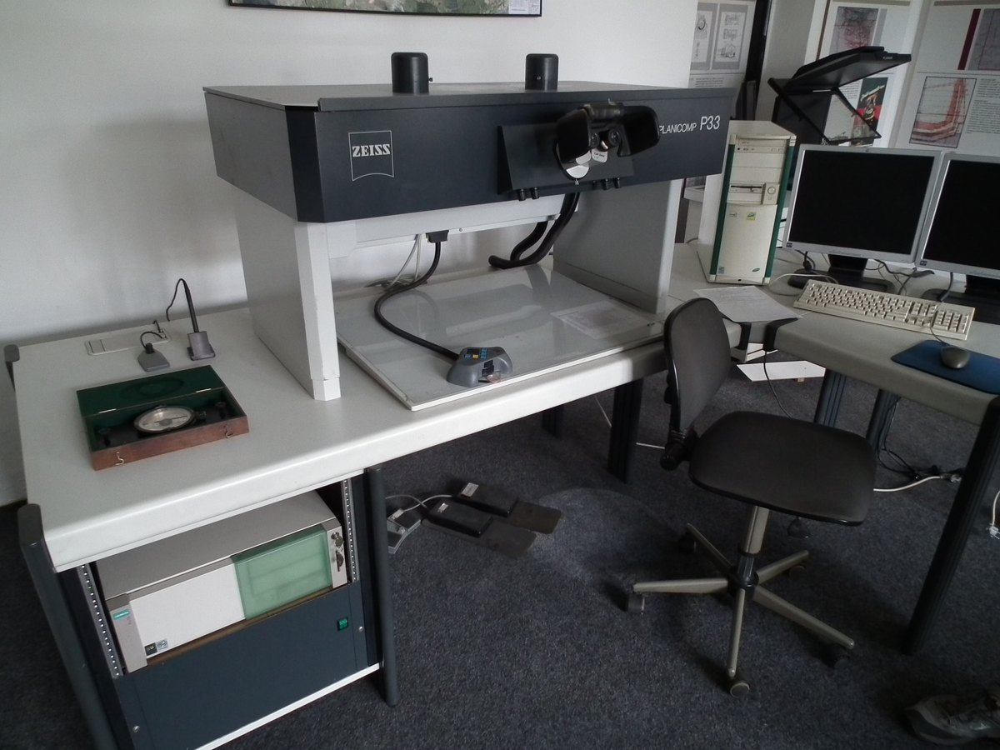
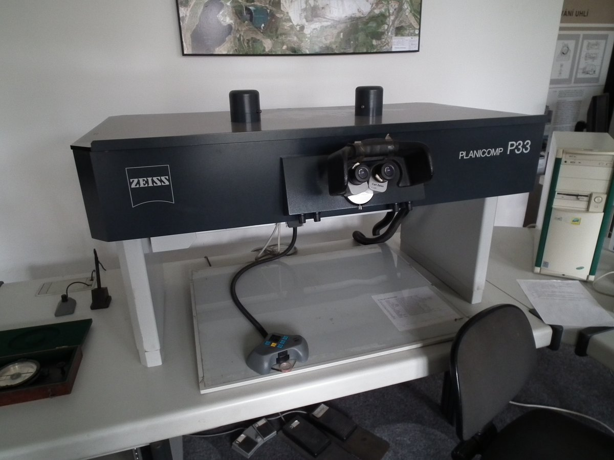

c.1980s
Carl Zeiss, Oberkochen (instrument department)
Carl Zeiss Planicomp P33 Analytical Stereoplotter (c.1980s)
You steer a floating dot through a 3-D model of the ground using two hands and a foot — the computer keeps it hanging in the air

Overview
Deep dive
Media
